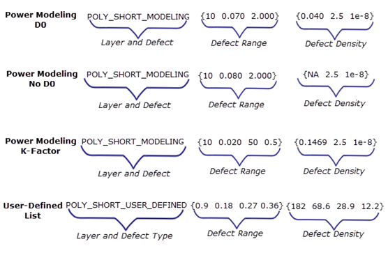

The format
of the defect data file is one entry per line that provides the
defect layer name and type, range of defect sizes, and defect density
specification.
Defect Data
Formats
Figure 1. Power Modeling and User-Defined List Defect Data Formats
For all entries, comment text is denoted
using the pound sign (#). Unless specified otherwise, all elements
for a given data format are mandatory.